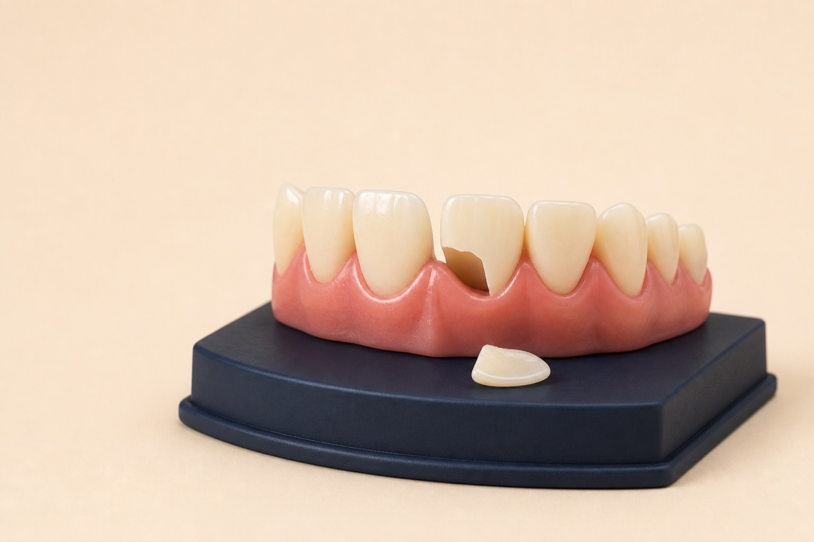

Call
Tell us the symptoms, when they started, and whether swelling or trauma is present.
Emergency dentist in Renton, WA
Severe pain, swelling, a broken tooth, or a dental injury can feel overwhelming. Call SmileVibe so we can understand what happened, identify the level of urgency, and arrange the right next step.

Before you arrive
Call first when possible so the team can guide you based on the specific problem.
Tell us the symptoms, when they started, and whether swelling or trauma is present.
Keep a knocked-out adult tooth moist and avoid handling its root.
Do not place aspirin on gums or attempt to glue a restoration yourself.
Come in for diagnosis and an appropriate treatment plan.
Call 911 or seek emergency medical care for difficulty breathing or swallowing, uncontrolled bleeding, major facial trauma, or rapidly spreading facial/neck swelling.
Problems we evaluate
Our first goal is to identify the source, relieve immediate risk or discomfort when possible, and explain definitive treatment options.
Deep decay, infection, cracked teeth, or inflamed gums can cause rapidly changing symptoms.
Fast evaluation can improve the chance of preserving a damaged or knocked-out tooth.
An exposed tooth may be sensitive or vulnerable and should be assessed.
What happens at the visit
Emergency care may be a temporary step or definitive treatment depending on the diagnosis, time, and complexity.
Emergency dental FAQ
Severe pain, swelling, dental trauma, uncontrolled bleeding, a knocked-out tooth, or a rapidly worsening problem may need urgent evaluation.
Handle it by the crown, rinse gently if dirty without scrubbing, try to place it back in the socket, or keep it moist in milk, and seek immediate dental care.
A dentist usually treats the dental source. Seek emergency medical care for trouble breathing or swallowing, significant facial trauma, uncontrolled bleeding, or rapidly spreading swelling.
Many can be repaired, but the outcome depends on fracture depth, nerve involvement, remaining structure, and supporting tissues.
Call the Renton office so we can help determine the safest next step.